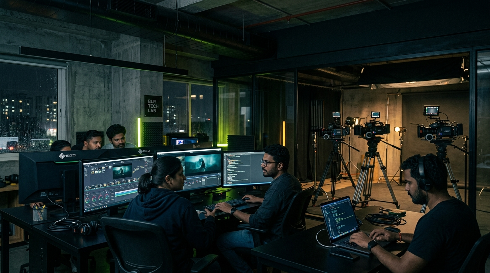
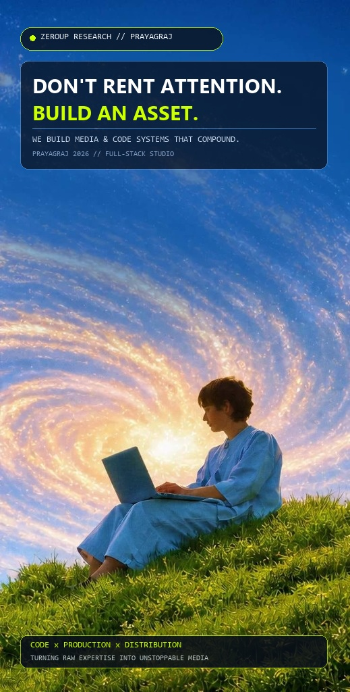
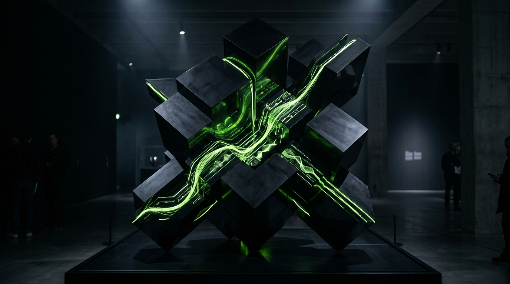

We don't manufacture awards or fake views. Here are real client productions, retention benchmarks, and distribution outcomes from ZEROUP.
Prayagraj's largest student & professional accommodation discovery network was relying on expensive property broker listings. ZEROUP engineered an episodic room tour series and student documentary narrative across YouTube and Instagram, turning casual viewers into direct organic inquiries.

Organic millet superfoods from the Vindhya region were facing rising Meta CAC and ad fatigue. ZEROUP built a dedicated farm-to-table origin docu-series and nutritional science video IP, connecting urban consumers directly with authentic farmer heritage.

Generic course ads were getting ignored by ambitious college graduates and working professionals. ZEROUP launched their Founder Thought Leadership engine — monthly Socratic interviews extracted into high-signal career frameworks, LinkedIn essays, and video breakdowns.

Tell us about the show you want to produce, the brand narrative you need to build, or the audience you want to own.